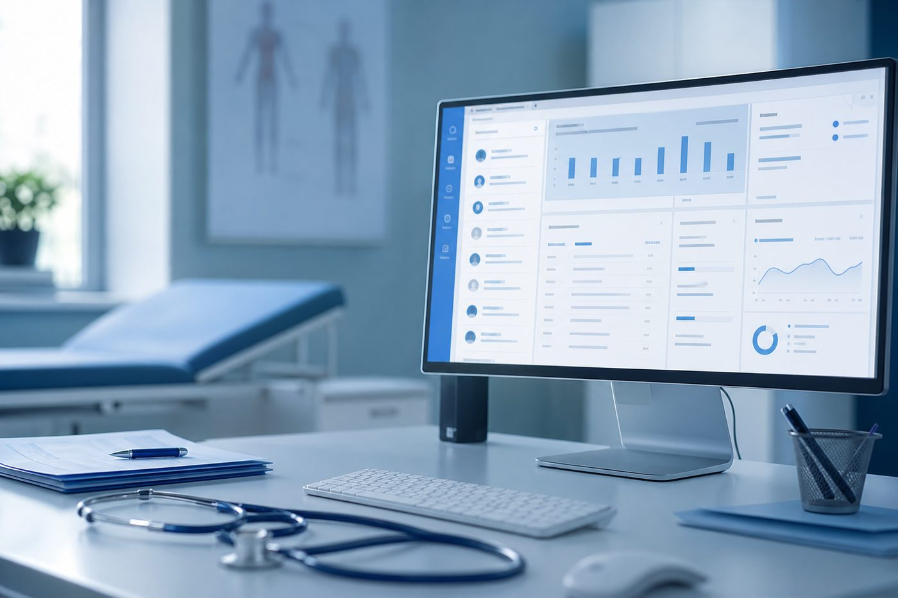

Langsame Abläufe
Wenn Termine, Dokumentation oder Abrechnung jeden Tag unnötig viele Klicks brauchen, merkt das irgendwann das ganze Team. Jeder Klick kostet Zeit.
Wir begleiten Ihre Praxis vom bestehenden System über Datenmigration und Einrichtung bis zur Schulung und dem produktiven Start mit T2med – persönlich, geplant und mit Blick auf Ihre tatsächlichen Praxisabläufe.
Stressfreier Softwarewechsel mit einem Ansprechpartner im Raum Karlsruhe.
Wenn sie stattdessen täglich neue Reibung erzeugt, lohnt sich die Frage, ob das bestehende System noch zu Ihrer Praxis passt.
Wenn Termine, Dokumentation oder Abrechnung jeden Tag unnötig viele Klicks brauchen, merkt das irgendwann das ganze Team. Jeder Klick kostet Zeit.
Wenn etwas nicht funktioniert, beginnt die Suche nach einem Ansprechpartner. Gute Software hilft wenig, wenn bei Problemen niemand klar erreichbar ist.
Das Team arbeitet um die Software herum, statt mit ihr. Workarounds werden zum Alltag – und kosten mehr Energie als sichtbar ist.
Wichtige Funktionen verursachen ständig neue Module oder laufende Kosten. Online-Termine, Videosprechstunde oder neue Prozesse lassen sich nur schwer integrieren.
Kurze Orientierung nach dem Praxisalltag. Wenn mehrere Punkte dauerhaft zutreffen, lohnt sich eine strukturierte Prüfung.
Beratung statt Hard-Selling. Manchmal liegt das Problem außerhalb der Praxissoftware.
Wenn die eigentlichen Probleme außerhalb der Praxissoftware liegen – etwa bei Abläufen, Hardware oder Kommunikation – kann Optimierung der sinnvollere Weg sein.
Wenn zentrale Anforderungen dauerhaft nicht mehr erfüllt werden, lohnt sich ein strukturierter Blick auf einen Wechsel zu T2med.
Ein Wechsel ist kein einzelner Installationsvorgang. Daten, Team, Abläufe, vorhandene IT und Betreuung gehören von Anfang an dazu. Wo sinnvoll, schauen wir auch auf Prozesse und Hardware – ohne alles neu zu machen.
Bestände und Abhängigkeiten früh einplanen.
Akzeptanz und sicheres Arbeiten im Alltag.
Wenn ohnehin gewechselt wird: Abläufe besser machen, nicht 1:1 übertragen.
Erst prüfen, dann entscheiden. Mehr unter Praxis-IT.
Medizinische Anbindungen mitdenken.
Klare Zuständigkeit auch nach dem Start.
T2med ist der Türöffner. Die netzwerft ist der Integrations- und Umsetzungspartner. Auf dieser Seite geht es primär um den Wechselprozess – nicht um die komplette Produktseite.

Wir begleiten den Weg von Ihrer bestehenden Praxissoftware bis zum produktiven Arbeiten mit dem neuen System – inklusive Daten, Team, Technik und Betreuung aus einer Hand.
Welche Software wird heute genutzt? Welche Probleme bestehen? Welche Abläufe sind wichtig?
Zielzustand, Prozesse, Timing, Team und technische Voraussetzungen gemeinsam definieren.
Bestehende Daten, Arbeitsplätze und notwendige Voraussetzungen für den Wechsel berücksichtigen.
Neue Umgebung vorbereiten und den Wechsel strukturiert durchführen.
Neue Software bringt nur dann einen Vorteil, wenn das Team sicher damit arbeiten kann.
Produktiven Einsatz begleiten und Ansprechpartner auch nach dem Wechsel bleiben.
Bei einem PVS-Wechsel müssen vorhandene Daten und Abhängigkeiten frühzeitig berücksichtigt werden. Transparenz und Planung sind hier der eigentliche Nutzen.
Ein neues System muss nicht nur dem Praxisinhaber gefallen. MFA und Praxismanagement arbeiten täglich damit – deshalb gehören Vorbereitung und Schulung zum Wechsel dazu.
Termine, Aufnahme, Dokumentation, Telefon und Abrechnung merken zuerst, ob Abläufe einfacher oder komplizierter werden.
Wer erst am Wechseltermin erfährt, was sich ändert, startet unnötig unter Druck. Einbindung und Timing gehören in die Wechselplanung.
Zentrale Wege vorbereiten und trainieren, Fragen aufnehmen und Sicherheit im Umgang schaffen. Neue Software soll Arbeit erleichtern – nicht erstmal neue Probleme.
Viele Probleme entstehen nicht durch die neue Software selbst, sondern durch einen unklaren Wechselprozess.
Feature-Listen allein sagen wenig darüber aus, wie Migration, Schulung und Go-live in Ihrer Praxis tatsächlich ablaufen.
Daten und Abhängigkeiten früh einplanen. Späte Klärung erzeugt unnötigen Druck kurz vor dem Start.
Wer den Alltag mit der Software trägt, sollte früh eingebunden werden. Akzeptanz entsteht nicht am Wechseltermin.
Arbeitsplätze, Netzwerk und Peripherie gehören zur Wechselplanung dazu. Nicht alles muss neu. Aber alles sollte geprüft sein.
Timing, Team und technische Voraussetzungen müssen zusammenpassen. Ein früher Termin ohne Vorbereitung kostet oft mehr Ruhe als Zeit.
Neue Software bringt nur dann einen Vorteil, wenn das Team sicher damit arbeiten kann.
Der Wechsel endet nicht mit der Installation. Klare Zuständigkeit danach ist Teil eines guten Wechsels.
Viele Praxen starten den Vergleich mit dem Listenpreis. Im Alltag entscheidet aber eine andere Rechnung: Was ist wirklich enthalten, was kommt später dazu, wer hilft wenn etwas hakt und wie viel Zeit die Software dem Team jeden Tag kostet.
Der Grundumfang klingt oft übersichtlich. Entscheidend ist, was bereits drin ist und wo die erste Zusatzposition beginnt, sobald Ihre Praxis so arbeitet, wie sie wirklich arbeitet.
Module, Schnittstellen und digitale Funktionen werden erst spürbar, wenn Empfang, Dokumentation und Abrechnung laufen. Was heute optional wirkt, kann morgen zum festen Kostenblock werden.
Betreuung und Erreichbarkeit gehören zur gleichen Entscheidung. Ebenso die Zeit, die Ihr Team mit der Software gewinnt oder jeden Tag wieder verliert.
Konkrete Zahlen hängen von System, Praxis und Anforderungen ab. Im Erstgespräch ordnen wir den relevanten Umfang ein: ehrlich, nachvollziehbar und ohne pauschale Versprechen.
Orientierung zu Wechsel, Support und Performance. Aktuell noch als Platzhalter, ausführliche Beiträge folgen.
Wann ein Wechsel sinnvoll ist, wie Migration und Schulung ablaufen und worauf Praxen achten sollten.
Beitrag lesenWoran Praxen merken, dass der Software-Support nicht mehr trägt, und welche Optionen dann bleiben.
Beitrag lesenTypische Ursachen für Wartezeiten am Rechner und was sich prüfen lässt, bevor ein Wechsel nötig wird.
Beitrag lesen3 kurze Angaben, damit wir Ihre Situation im Erstgespräch direkt einordnen können.
In einem ersten Gespräch schauen wir uns Ihre aktuelle Situation, Ihre Praxissoftware und die wichtigsten Wechselgründe an und klären, welche nächsten Schritte sinnvoll sind.
Lieber schreiben? info@dienetzwerft.de · Neu gründen? Zur Praxisgründung · Übernahme? Zur Praxisübernahme